{kind=link}
{kind=link}
{kind=link}
{kind=link}
{kind=link}
{kind=link}
{kind=link}
{kind=link}
{kind=link}
{kind=link}
{kind=link}
{kind=link}
{kind=link}
{kind=link}
{kind=link}
Dirección
Águila Mora esq. Av. de las Garzas
Punta Colorada, Maldonado, Uruguay
Punta Colorada · Maldonado
Masa de fermentación lenta, ingredientes de estación y una parrilla de tragos para acompañar. Abrimos de jueves a sábados, cuando cae el sol sobre Punta Colorada.
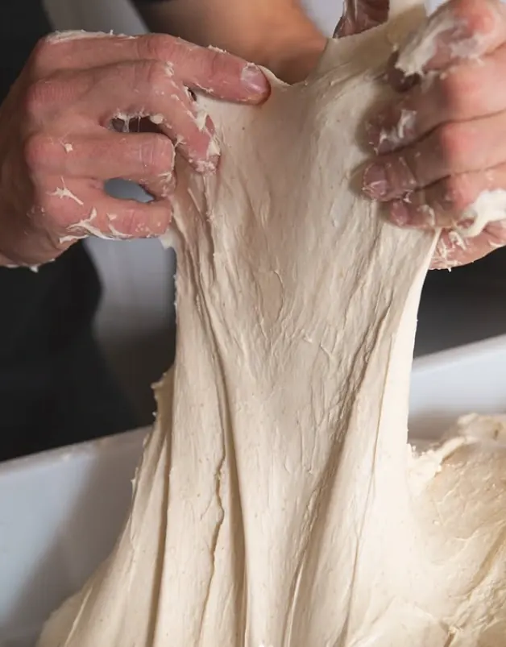
El horno se enciende horas antes de abrir las puertas.
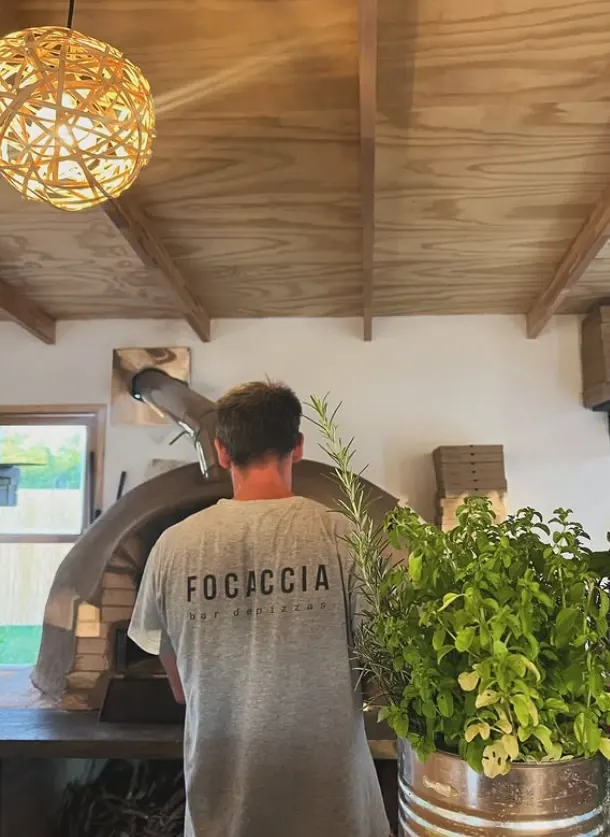
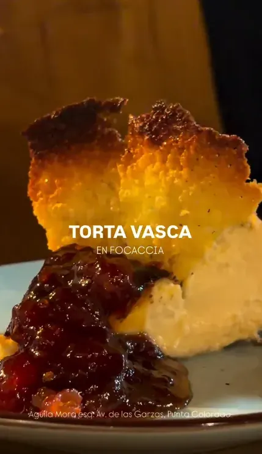
Nuestra historia
Focaccia nació como un puñado de mesas al aire libre en Punta Colorada. Hoy seguimos siendo eso: un bar de pizzas chico, con horno propio, masa de 48 horas de fermentación y una carta corta que cambia con lo que trae la estación.
Nada sale apurado. El fuego se enciende a media tarde, la masa se estira a mano y las focaccias se dejan reposar hasta que el aceite de oliva encuentra cada rincón. Después, solo queda una mesa, buena compañía y un trago.
Para acompañar
Clásicos bien hechos, con hielo de verdad y buena medida.
Instagram · @focaccia_puntacolorada
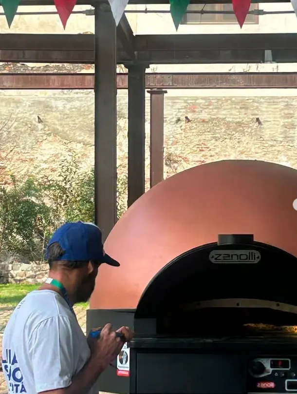
Salsa a fuego lento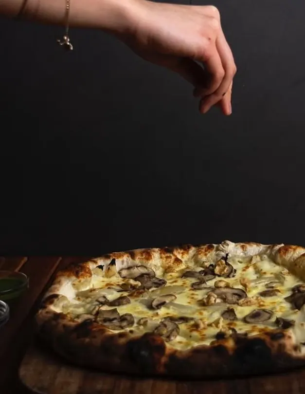
Focaccia del día Para compartir Masa fresca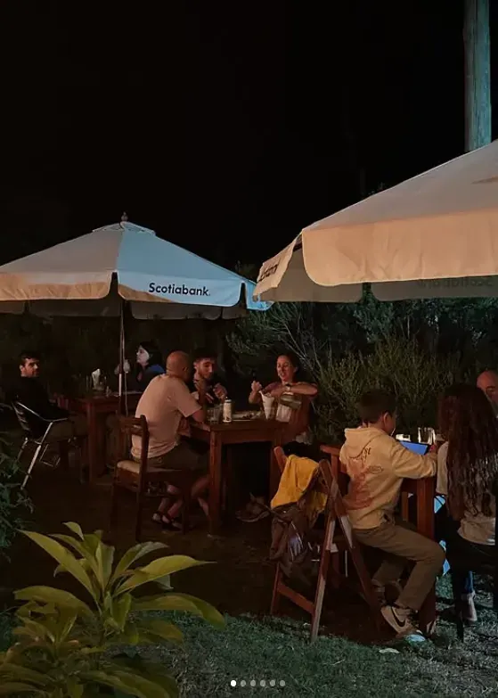
Ambiente nocturno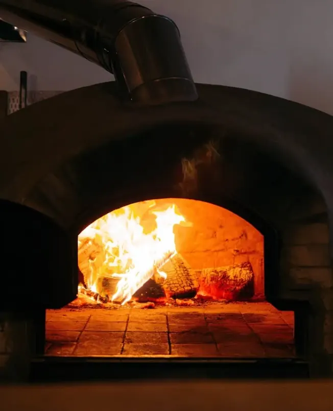
Aceitunas y tapenade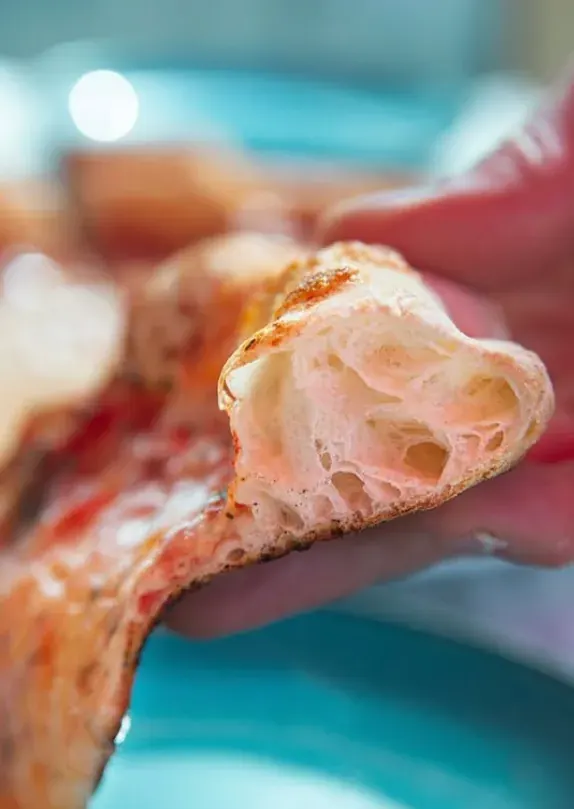
Ingredientes frescos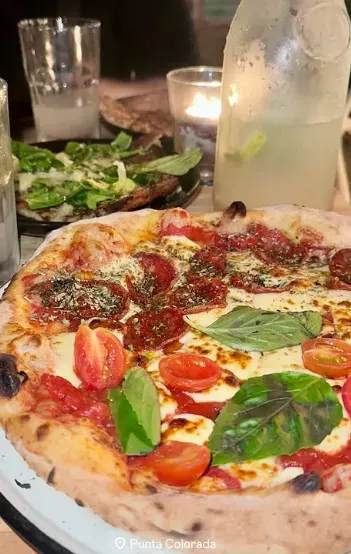
La barra de tragos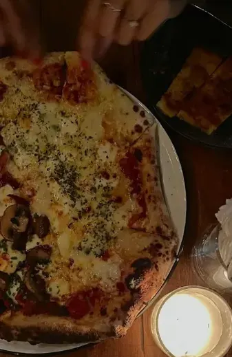
En la cocina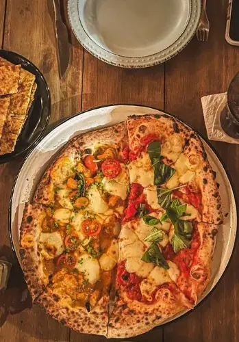
Torta vasca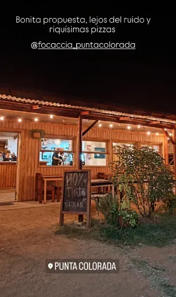
El horno de barro Nuestro equipo Albahaca y cherry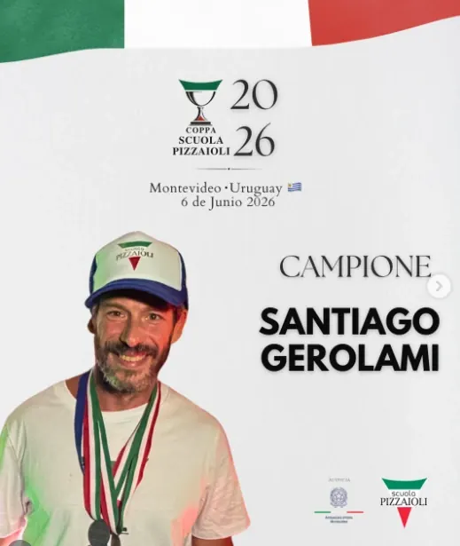
Campeones 2026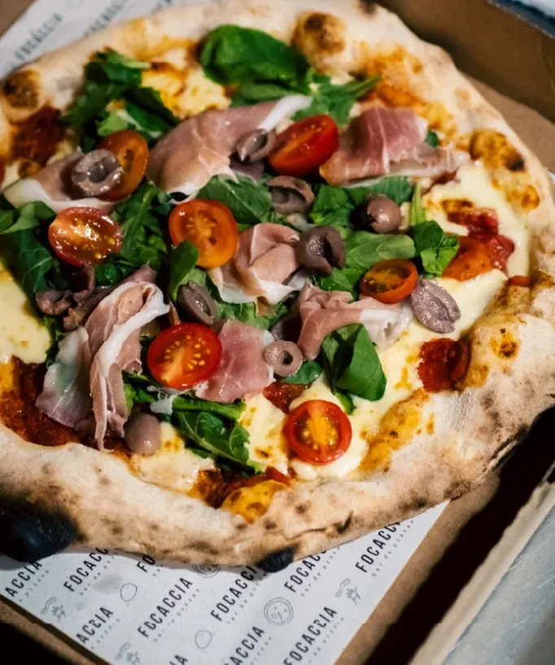
Del horno a la mesaVisitanos
Águila Mora esq. Av. de las Garzas
Punta Colorada, Maldonado, Uruguay
| Jueves | 20:00 – 00:00 |
| Viernes | 20:00 – 00:00 |
| Sábado | 20:00 – 00:00 |
| Dom. – Mié. | Cerrado |
Por WhatsApp o llamada. Para grupos de más de 8 personas, escribinos con anticipación.
091 537 001 →@focaccia_puntacolorada · 2.947 seguidores · fotos de cada horneada